library(ggplot2)
library(dplyr)
library(ggsci)
library(scales)
# 使用 mtcars 和 diamonds 数据
data(mtcars)
data(diamonds)柱状图与饼图完全指南
可视化
ggplot2
柱状图
使用 ggplot2 绑制柱状图、堆叠图、饼图、环形图、棒棒糖图等分类数据可视化。
简介
柱状图和饼图是展示分类数据的经典图表：
| 图表类型 | 适用场景 | 优点 | 缺点 |
|---|---|---|---|
| 柱状图 | 比较不同类别 | 精确比较数值 | 类别过多时拥挤 |
| 堆叠柱状图 | 展示组成比例 | 显示总量和构成 | 中间部分难比较 |
| 饼图 | 展示占比 | 直观展示百分比 | 难以精确比较 |
| 棒棒糖图 | 替代柱状图 | 简洁现代 | 不够传统 |
基础柱状图
计数柱状图
ggplot(diamonds, aes(x = cut)) +
geom_bar(fill = "#4f46e5") +
labs(
title = "各切工等级的钻石数量",
x = "切工等级",
y = "数量"
) +
theme_minimal()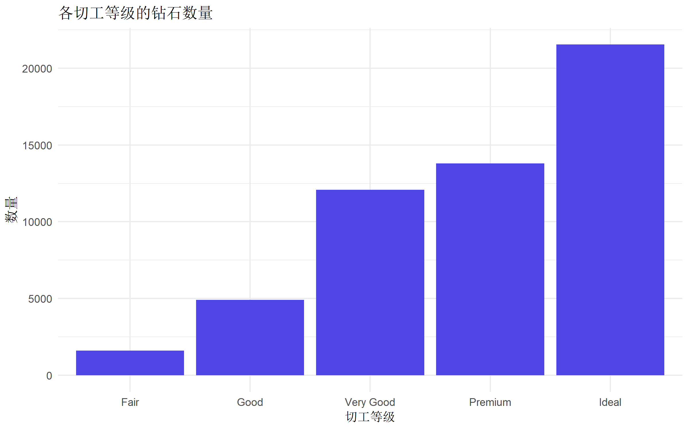
数值柱状图
当数据已经汇总时，使用 stat = "identity"。
# 汇总数据
cut_summary <- diamonds %>%
group_by(cut) %>%
summarise(avg_price = mean(price))
ggplot(cut_summary, aes(x = cut, y = avg_price)) +
geom_bar(stat = "identity", fill = "#22c55e") +
labs(
title = "各切工等级的平均价格",
x = "切工等级",
y = "平均价格 ($)"
) +
theme_minimal()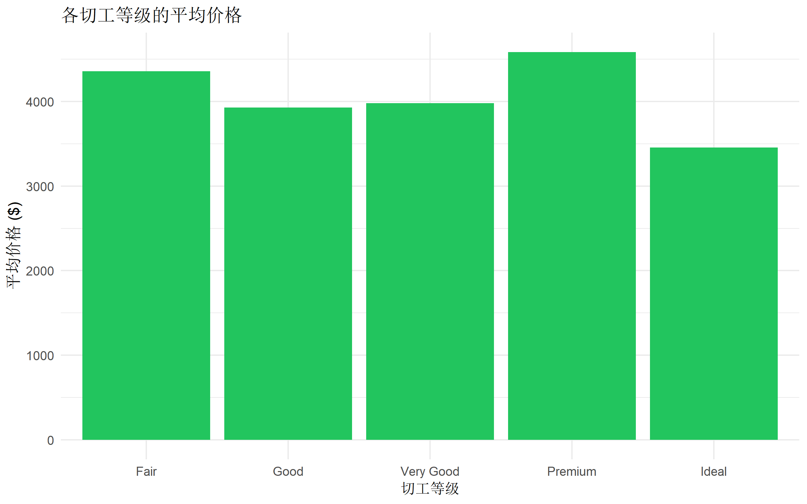
也可以使用 geom_col
# geom_col 等价于 geom_bar(stat = "identity")
ggplot(cut_summary, aes(x = cut, y = avg_price)) +
geom_col(fill = "#f59e0b") +
labs(title = "使用 geom_col()") +
theme_minimal()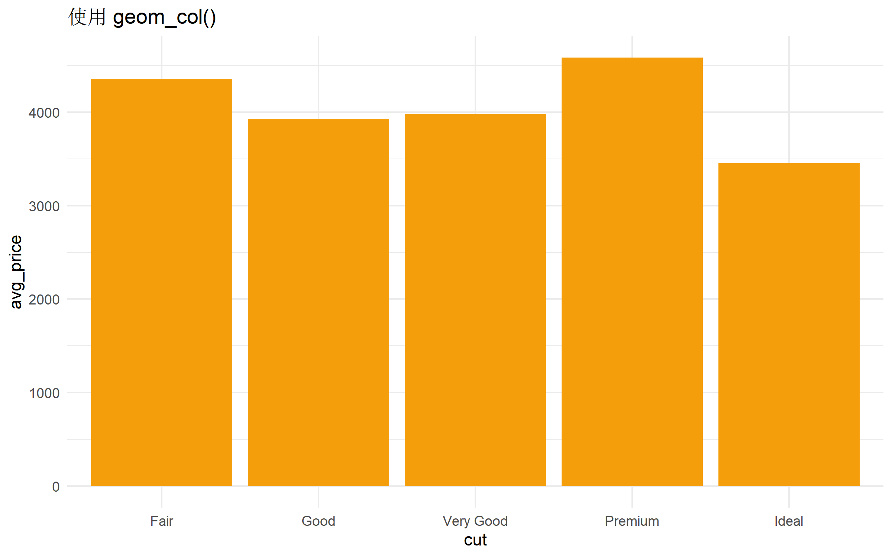
柱状图美化
自定义颜色
ggplot(diamonds, aes(x = cut, fill = cut)) +
geom_bar() +
scale_fill_brewer(palette = "Set2") +
labs(title = "按类别填色") +
theme_minimal() +
theme(legend.position = "none")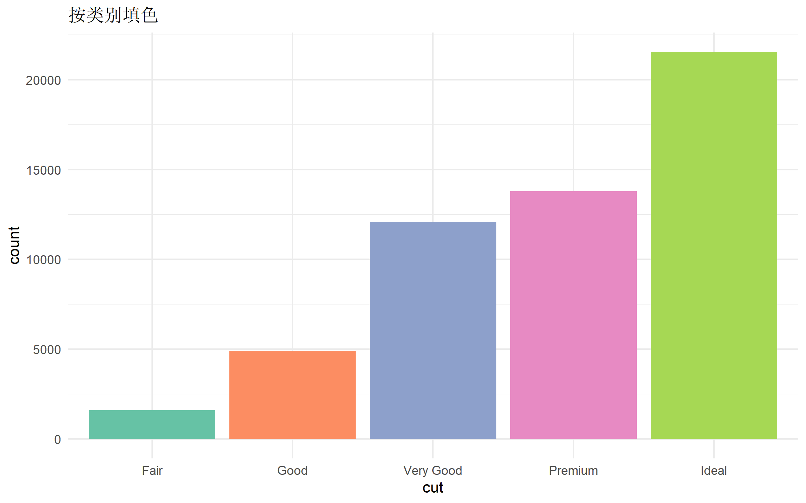
添加数值标签
cut_count <- diamonds %>%
count(cut)
ggplot(cut_count, aes(x = cut, y = n)) +
geom_col(fill = "#4f46e5") +
geom_text(
aes(label = format(n, big.mark = ",")),
vjust = -0.5,
size = 4
) +
scale_y_continuous(expand = expansion(mult = c(0, 0.1))) +
labs(
title = "添加数值标签",
x = "切工等级",
y = "数量"
) +
theme_minimal()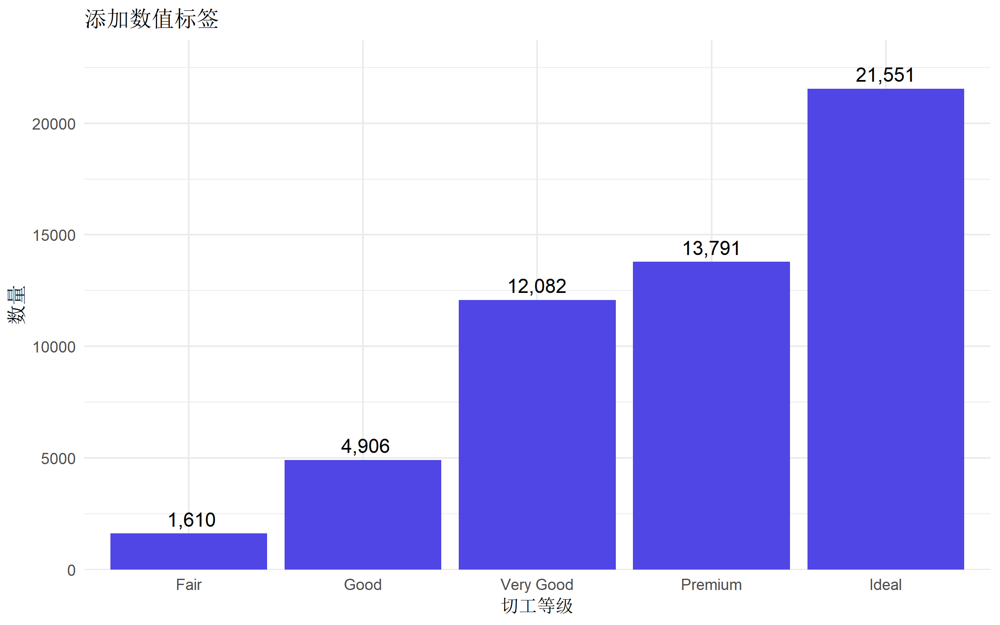
柱内标签
ggplot(cut_count, aes(x = cut, y = n)) +
geom_col(fill = "#4f46e5") +
geom_text(
aes(label = format(n, big.mark = ",")),
vjust = 1.5,
color = "white",
size = 4,
fontface = "bold"
) +
labs(title = "柱内数值标签") +
theme_minimal()水平柱状图
ggplot(cut_count, aes(x = reorder(cut, n), y = n)) +
geom_col(fill = "#22c55e") +
geom_text(aes(label = format(n, big.mark = ",")), hjust = -0.1) +
coord_flip() +
labs(
title = "水平柱状图",
x = NULL,
y = "数量"
) +
theme_minimal()
分组柱状图
并列分组
# 准备分组数据
grouped_data <- diamonds %>%
filter(cut %in% c("Fair", "Good", "Ideal")) %>%
count(cut, color) %>%
filter(color %in% c("D", "E", "F"))
ggplot(grouped_data, aes(x = color, y = n, fill = cut)) +
geom_col(position = position_dodge(width = 0.8), width = 0.7) +
scale_fill_brewer(palette = "Set2") +
labs(
title = "分组柱状图",
x = "颜色等级",
y = "数量",
fill = "切工"
) +
theme_minimal()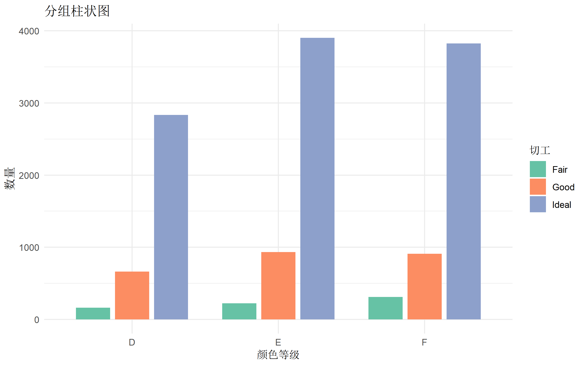
调整分组间距
ggplot(grouped_data, aes(x = color, y = n, fill = cut)) +
geom_col(position = position_dodge2(width = 0.9, preserve = "single")) +
scale_fill_lancet() +
labs(title = "调整分组间距") +
theme_minimal()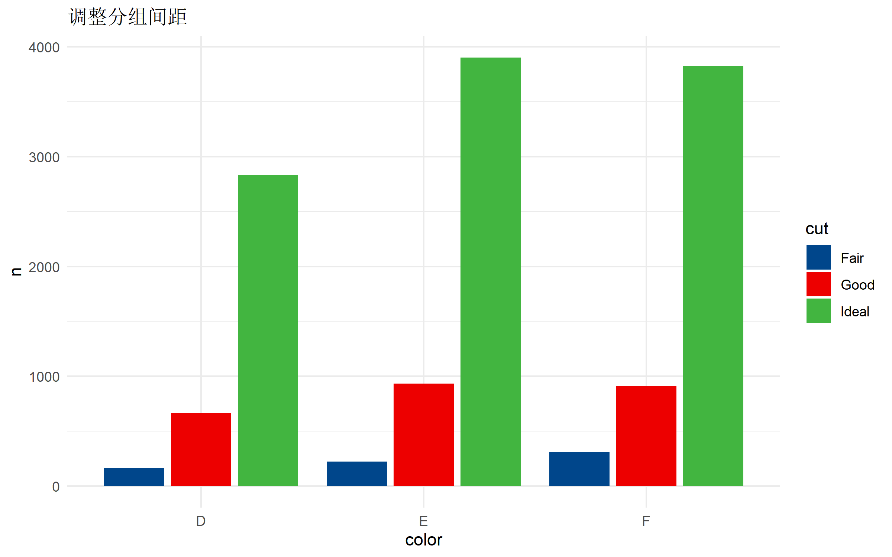
堆叠柱状图
基础堆叠
stack_data <- diamonds %>%
count(cut, clarity)
ggplot(stack_data, aes(x = cut, y = n, fill = clarity)) +
geom_col() +
scale_fill_brewer(palette = "Spectral") +
labs(
title = "堆叠柱状图",
x = "切工",
y = "数量",
fill = "净度"
) +
theme_minimal()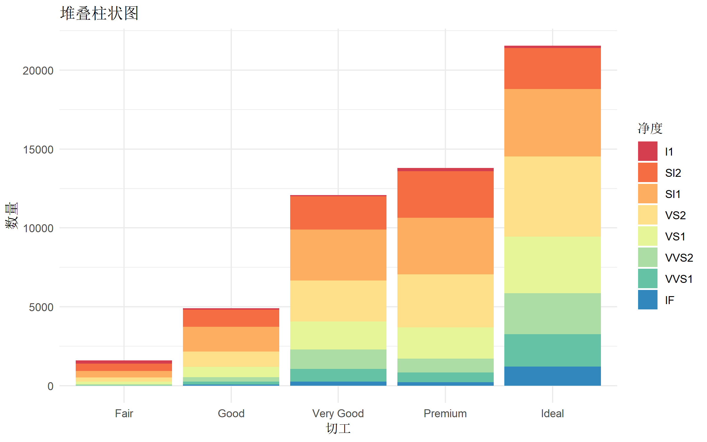
百分比堆叠
ggplot(stack_data, aes(x = cut, y = n, fill = clarity)) +
geom_col(position = "fill") +
scale_fill_brewer(palette = "Spectral") +
scale_y_continuous(labels = percent_format()) +
labs(
title = "百分比堆叠柱状图",
x = "切工",
y = "百分比",
fill = "净度"
) +
theme_minimal()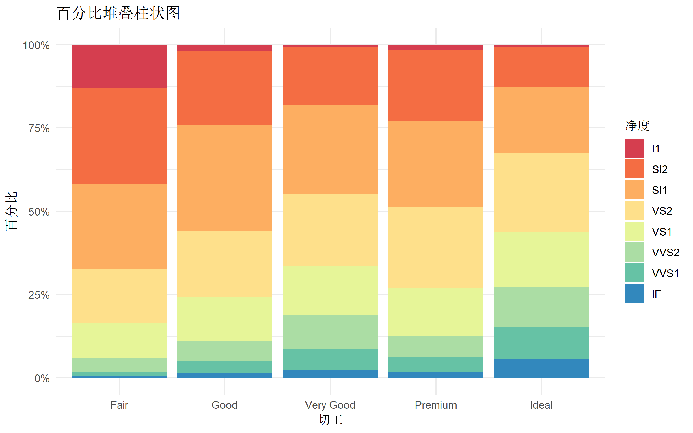
添加百分比标签
# 计算百分比
stack_pct <- stack_data %>%
group_by(cut) %>%
mutate(pct = n / sum(n))
ggplot(stack_pct, aes(x = cut, y = pct, fill = clarity)) +
geom_col() +
geom_text(
aes(label = ifelse(pct > 0.05, percent(pct, accuracy = 1), "")),
position = position_stack(vjust = 0.5),
color = "white",
size = 3
) +
scale_fill_brewer(palette = "Spectral") +
scale_y_continuous(labels = percent_format()) +
labs(title = "带标签的百分比堆叠图") +
theme_minimal()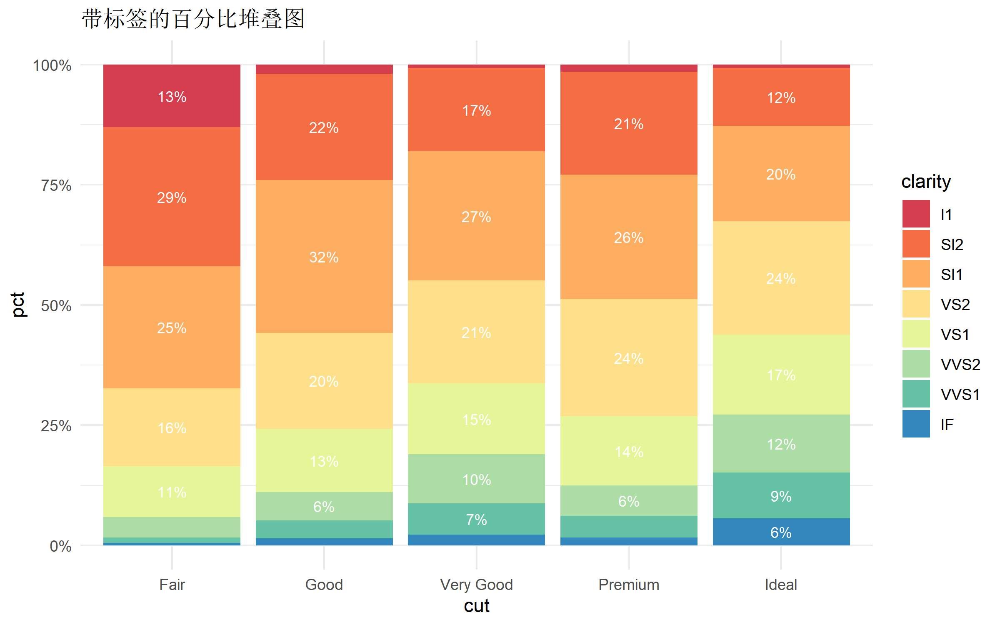
误差棒
添加标准误差
# 计算均值和标准误差
error_data <- diamonds %>%
group_by(cut) %>%
summarise(
mean_price = mean(price),
se = sd(price) / sqrt(n()),
.groups = "drop"
)
ggplot(error_data, aes(x = cut, y = mean_price)) +
geom_col(fill = "#4f46e5", alpha = 0.8) +
geom_errorbar(
aes(ymin = mean_price - se, ymax = mean_price + se),
width = 0.2
) +
labs(
title = "柱状图 + 误差棒 (标准误差)",
x = "切工",
y = "平均价格 ($)"
) +
theme_minimal()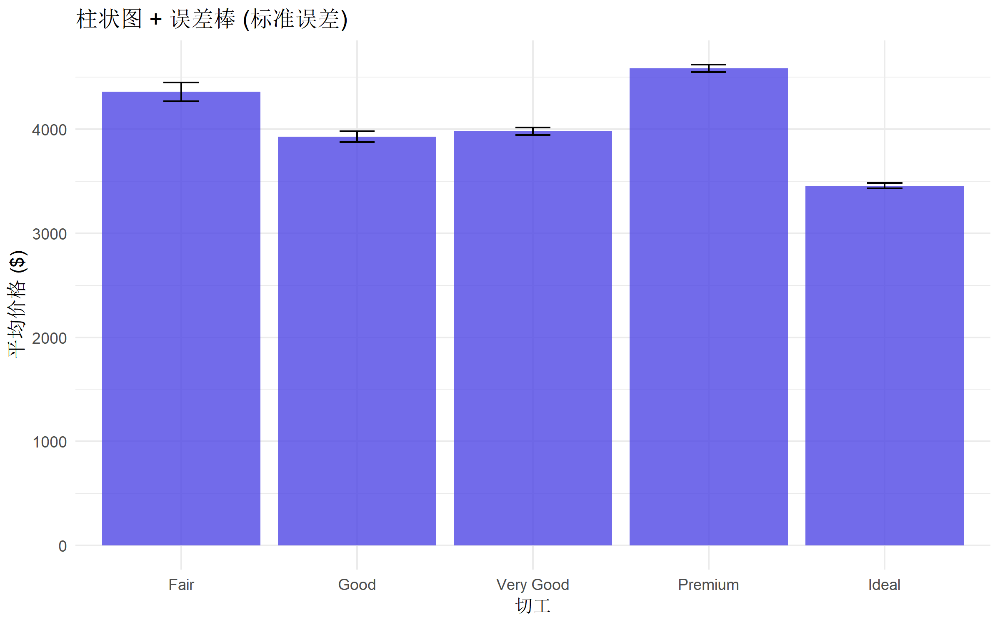
添加标准差
error_data2 <- diamonds %>%
group_by(cut) %>%
summarise(
mean_price = mean(price),
sd_price = sd(price),
.groups = "drop"
)
ggplot(error_data2, aes(x = cut, y = mean_price)) +
geom_col(fill = "#22c55e", alpha = 0.8) +
geom_errorbar(
aes(ymin = mean_price - sd_price, ymax = mean_price + sd_price),
width = 0.2,
color = "#166534"
) +
labs(title = "柱状图 + 标准差") +
theme_minimal()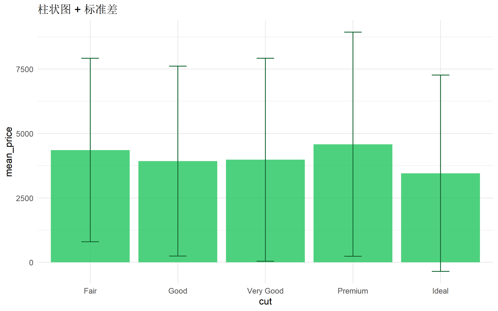
棒棒糖图
棒棒糖图是柱状图的现代替代品，更加简洁。
基础棒棒糖图
ggplot(cut_summary, aes(x = cut, y = avg_price)) +
geom_segment(
aes(x = cut, xend = cut, y = 0, yend = avg_price),
color = "#94a3b8",
linewidth = 1
) +
geom_point(color = "#4f46e5", size = 4) +
labs(
title = "棒棒糖图",
x = "切工等级",
y = "平均价格"
) +
theme_minimal()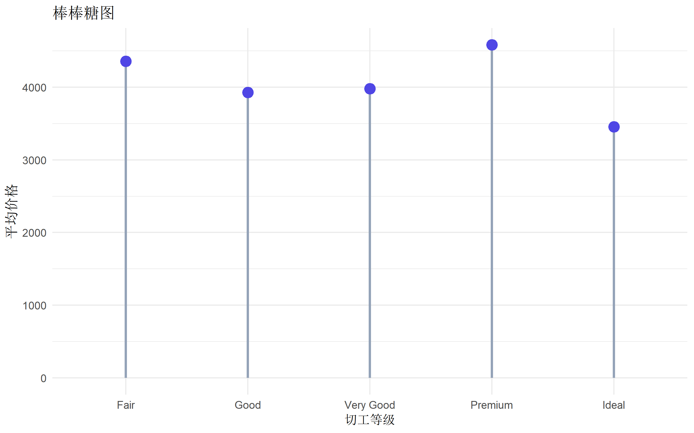
水平棒棒糖图
ggplot(cut_summary, aes(x = reorder(cut, avg_price), y = avg_price)) +
geom_segment(
aes(xend = cut, y = 0, yend = avg_price),
color = "#94a3b8",
linewidth = 1
) +
geom_point(color = "#ef4444", size = 5) +
geom_text(aes(label = paste0("$", round(avg_price))), hjust = -0.3) +
coord_flip() +
labs(
title = "水平棒棒糖图",
x = NULL,
y = "平均价格"
) +
theme_minimal()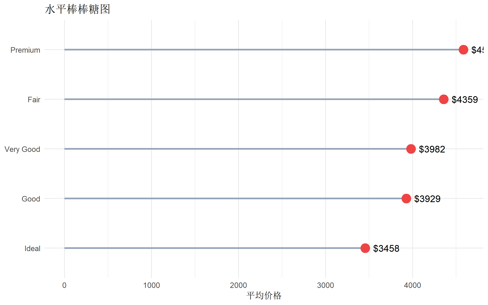
Cleveland 点图
ggplot(cut_summary, aes(x = avg_price, y = reorder(cut, avg_price))) +
geom_point(color = "#4f46e5", size = 4) +
geom_segment(
aes(x = min(avg_price) - 100, xend = avg_price, yend = cut),
linetype = "dotted",
color = "#94a3b8"
) +
labs(
title = "Cleveland 点图",
x = "平均价格",
y = NULL
) +
theme_minimal()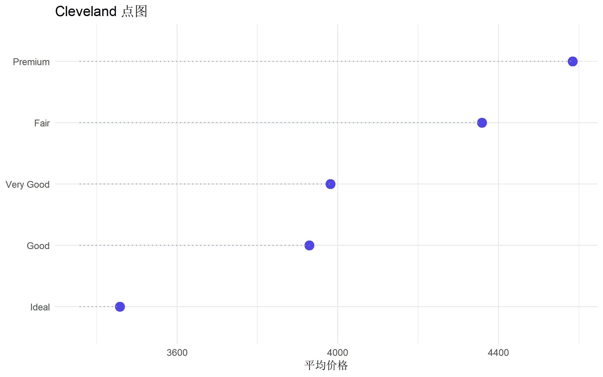
饼图
[!WARNING] 饼图在数据可视化中常被批评，因为难以精确比较扇区大小。建议在类别较少（≤5）且需要强调占比时使用。
基础饼图
cut_pct <- diamonds %>%
count(cut) %>%
mutate(pct = n / sum(n))
ggplot(cut_pct, aes(x = "", y = pct, fill = cut)) +
geom_col(width = 1) +
coord_polar(theta = "y") +
scale_fill_brewer(palette = "Set2") +
labs(title = "基础饼图", fill = "切工") +
theme_void()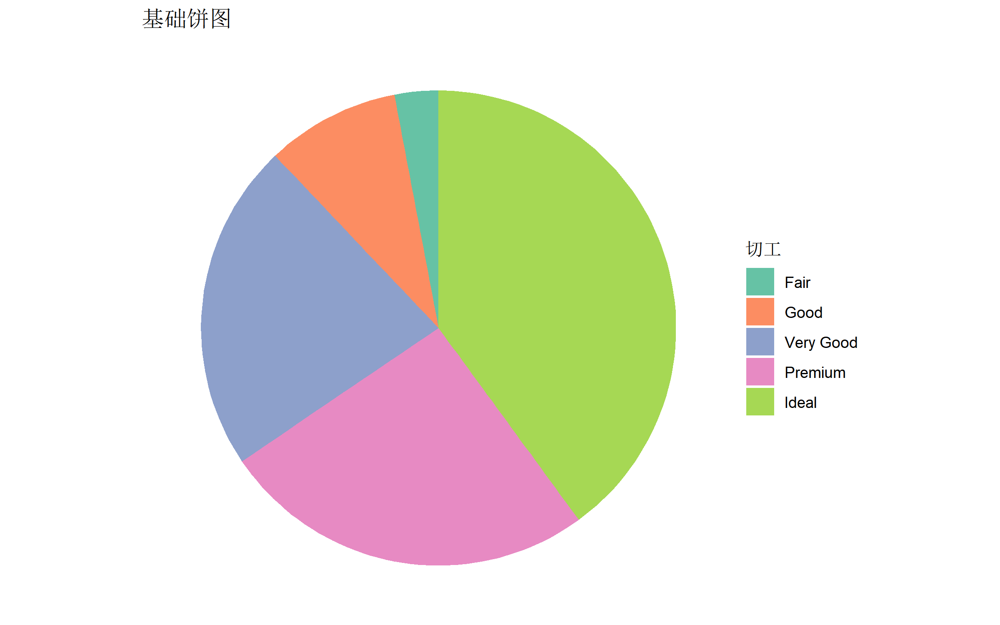
添加百分比标签
ggplot(cut_pct, aes(x = "", y = pct, fill = cut)) +
geom_col(width = 1) +
geom_text(
aes(label = percent(pct, accuracy = 0.1)),
position = position_stack(vjust = 0.5),
color = "white",
fontface = "bold"
) +
coord_polar(theta = "y") +
scale_fill_brewer(palette = "Set2") +
labs(title = "带标签饼图") +
theme_void()环形图 (Donut Chart)
ggplot(cut_pct, aes(x = 2, y = pct, fill = cut)) +
geom_col(width = 1) +
geom_text(
aes(label = percent(pct, accuracy = 0.1)),
position = position_stack(vjust = 0.5),
color = "white",
size = 3
) +
coord_polar(theta = "y") +
xlim(0.5, 2.5) + # 创建中心空洞
scale_fill_brewer(palette = "Pastel1") +
labs(title = "环形图 (Donut Chart)") +
theme_void()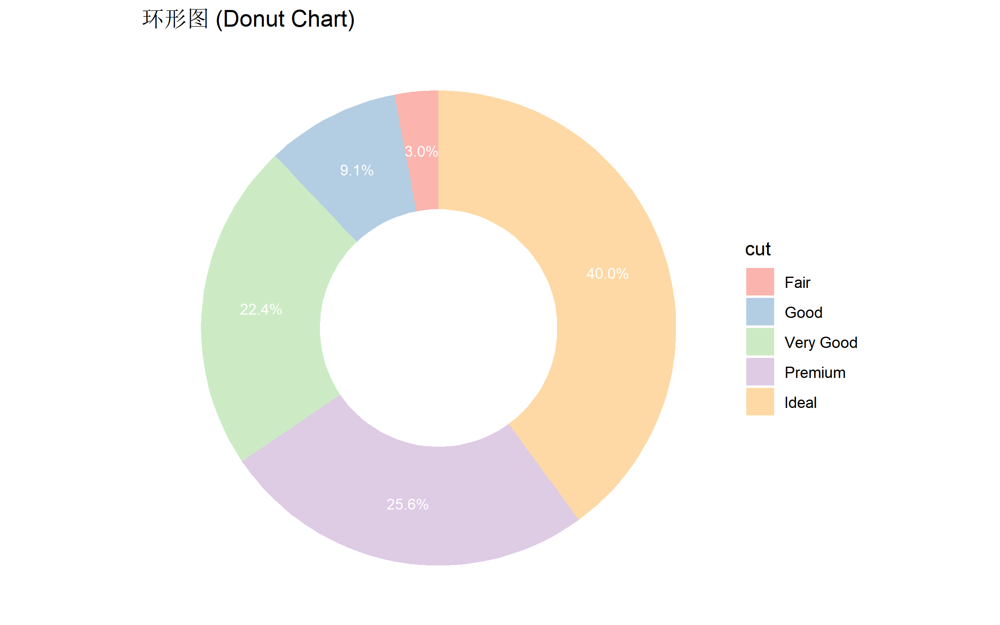
带中心文字的环形图
ggplot(cut_pct, aes(x = 2, y = pct, fill = cut)) +
geom_col(width = 1) +
coord_polar(theta = "y") +
xlim(0.5, 2.5) +
annotate("text",
x = 0.5, y = 0,
label = paste0("Total\n", format(sum(cut_pct$n), big.mark = ",")),
size = 5, fontface = "bold"
) +
scale_fill_lancet() +
labs(title = "带总数的环形图") +
theme_void()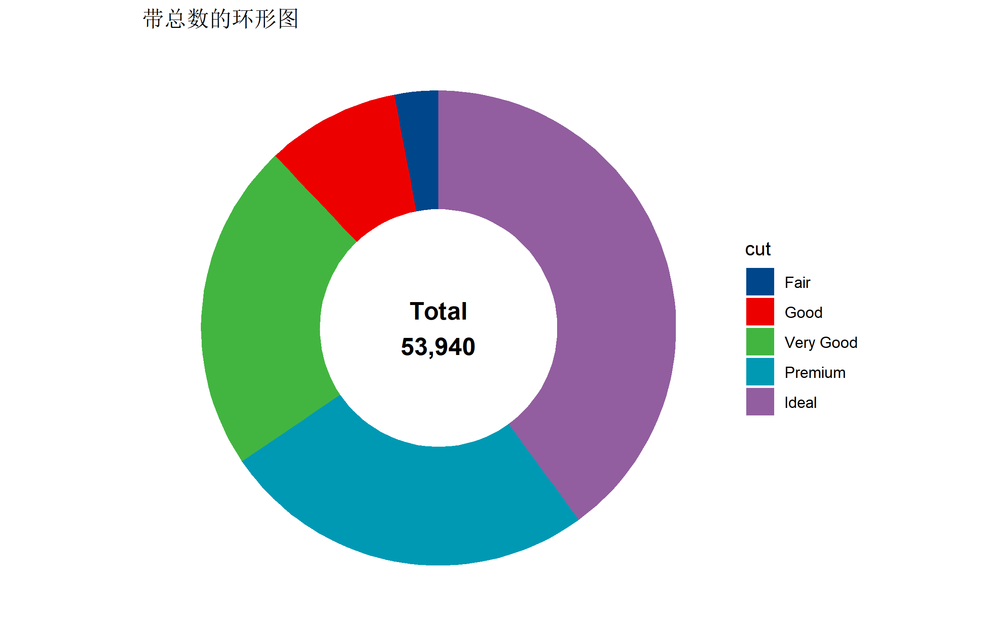
玫瑰图 (Coxcomb/Nightingale)
ggplot(cut_pct, aes(x = cut, y = pct, fill = cut)) +
geom_col(width = 1) +
coord_polar() +
scale_fill_brewer(palette = "Set3") +
labs(title = "玫瑰图 (Nightingale Chart)") +
theme_minimal() +
theme(
axis.text.y = element_blank(),
axis.title = element_blank(),
legend.position = "none"
)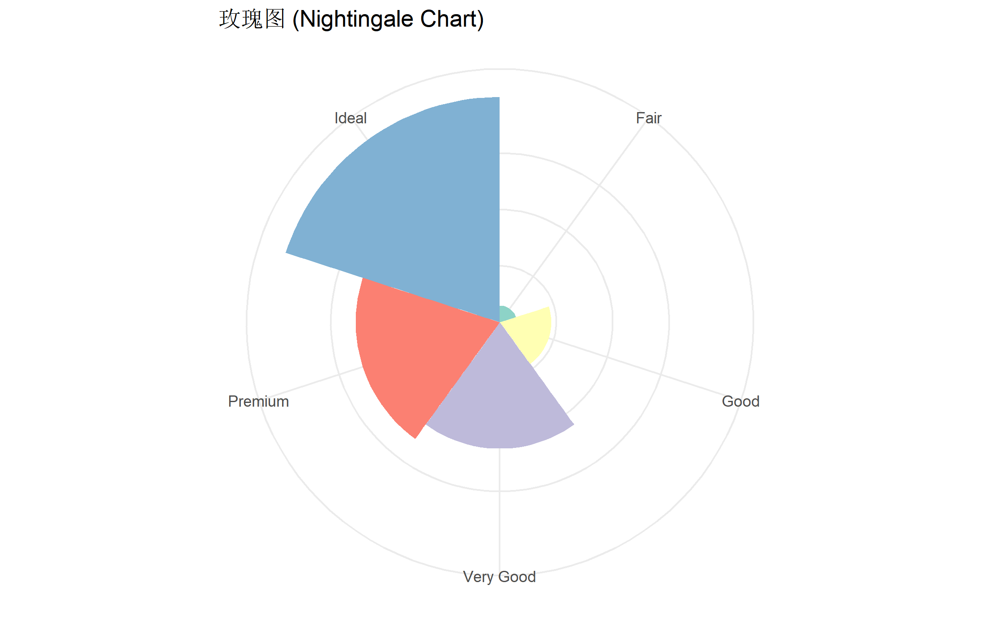
华夫饼图 (Waffle Chart)
# install.packages("waffle")
library(waffle)
# 准备数据（四舍五入为整数百分比）
waffle_data <- cut_pct %>%
mutate(pct_int = round(pct * 100)) %>%
pull(pct_int)
names(waffle_data) <- cut_pct$cut
waffle(waffle_data,
rows = 5, size = 1,
colors = RColorBrewer::brewer.pal(5, "Set2"),
title = "华夫饼图：各切工占比"
)树状图 (Treemap)
# install.packages("treemapify")
library(treemapify)
tree_data <- diamonds %>%
count(cut, color) %>%
group_by(cut) %>%
mutate(total = sum(n))
ggplot(tree_data, aes(area = n, fill = cut, subgroup = cut)) +
geom_treemap() +
geom_treemap_subgroup_border(color = "white", size = 3) +
geom_treemap_text(aes(label = color), color = "white", place = "centre") +
scale_fill_brewer(palette = "Set2") +
labs(title = "树状图：切工与颜色分布") +
theme(legend.position = "bottom")分面柱状图
facet_data <- diamonds %>%
count(cut, clarity) %>%
filter(clarity %in% c("IF", "VVS1", "VS1", "SI1"))
ggplot(facet_data, aes(x = cut, y = n, fill = cut)) +
geom_col() +
facet_wrap(~clarity, scales = "free_y") +
scale_fill_brewer(palette = "Set2") +
labs(title = "按净度分面的柱状图") +
theme_minimal() +
theme(
legend.position = "none",
axis.text.x = element_text(angle = 45, hjust = 1)
)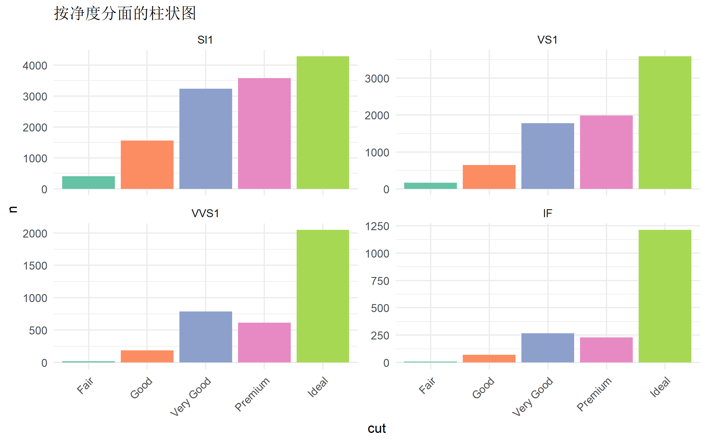
专业图表示例
# 准备专业图表数据
pro_data <- diamonds %>%
group_by(cut) %>%
summarise(
count = n(),
avg_price = mean(price),
se = sd(price) / sqrt(n())
) %>%
mutate(cut = factor(cut, levels = rev(levels(cut))))
ggplot(pro_data, aes(x = cut, y = avg_price)) +
geom_col(fill = "#4f46e5", alpha = 0.9, width = 0.7) +
geom_errorbar(
aes(ymin = avg_price - se, ymax = avg_price + se),
width = 0.15,
color = "#1e1b4b"
) +
geom_text(
aes(label = paste0("$", format(round(avg_price), big.mark = ","))),
hjust = -0.1,
color = "#1e1b4b",
fontface = "bold"
) +
coord_flip() +
scale_y_continuous(
labels = dollar_format(),
expand = expansion(mult = c(0, 0.15))
) +
labs(
title = "钻石平均价格按切工等级比较",
subtitle = "误差棒表示标准误差",
x = NULL,
y = "平均价格",
caption = "数据来源：ggplot2 diamonds"
) +
theme_minimal(base_size = 12) +
theme(
plot.title = element_text(face = "bold", size = 14),
plot.subtitle = element_text(color = "gray50"),
panel.grid.major.y = element_blank(),
panel.grid.minor = element_blank()
)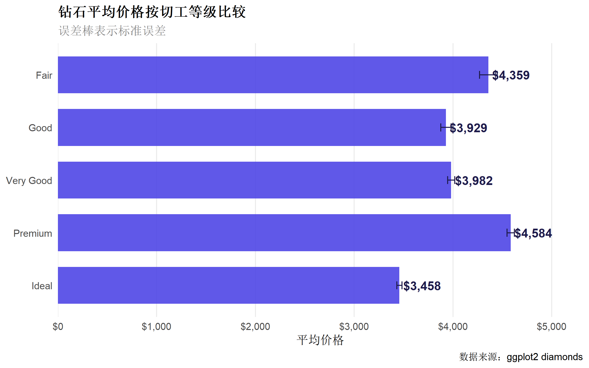
保存图片
p <- ggplot(cut_count, aes(x = cut, y = n, fill = cut)) +
geom_col() +
scale_fill_brewer(palette = "Set2") +
theme_minimal()
ggsave("barchart.png", p, width = 8, height = 6, dpi = 300)
ggsave("barchart.pdf", p, width = 8, height = 6)总结
| 场景 | 推荐图表 |
|---|---|
| 类别数值比较 | 柱状图/水平柱状图 |
| 多组对比 | 分组柱状图 |
| 占比构成 | 堆叠柱状图/百分比堆叠 |
| 简洁现代风格 | 棒棒糖图 |
| 占比展示（≤5类） | 饼图/环形图 |
| 层级占比 | 树状图 |
[!TIP] 最佳实践： 1. 排序柱状图使比较更容易 2. 水平柱状图适合长类别名 3. 避免 3D 效果，保持简洁 4. 添加数值标签增强可读性